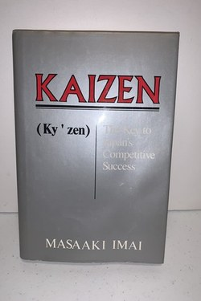

Why Did Toyota (2009-2011) Fail?
The Quality King Who Forgot the Andon Cord
📜 What Happened
Toyota was the world's most admired manufacturer — the company that invented kaizen, the Andon cord and just-in-time. But between 2009 and 2011, over 10 million vehicles were recalled worldwide for sudden unintended acceleration; Toyota suspended US sales and production in January 2010, and Congress hauled executives to Washington. The U.S. government fined Toyota $16.375M and then a further $16.4M — the largest civil penalties of their kind at the time — and capped the episode with a $1.2B deferred-prosecution settlement in 2014. Independent studies (including NASA's) later found no electronic defect: the causes were floor-mat interference and pedal entrapment — but the deeper finding was that Toyota's growth had outrun its own culture. The company that invented 'stop the line' had kept the line running.
☠️ The Fatal Mistake
Allowing scale and speed to override the stop-the-line culture — expansion became the standard, and quality became the casualty.
🧠 The Lesson (Free for You)
Kaizen is a discipline, not a slogan. Toyota's lesson: the company that invented the Andon cord still had to learn that culture is only as strong as the last time you sacrificed speed for correctness — and when you're the benchmark, nobody will tell you; you must tell yourself.
📕 The Antidote Book

Imai's book introduced the West to the idea that turned Japanese manufacturing into a global force: improvement is not a special event by experts, but…
📖 OPEN THE FULL INTERACTIVE BREAKDOWN →Searchable, filterable, free forever — they paid billions; your lesson is free.